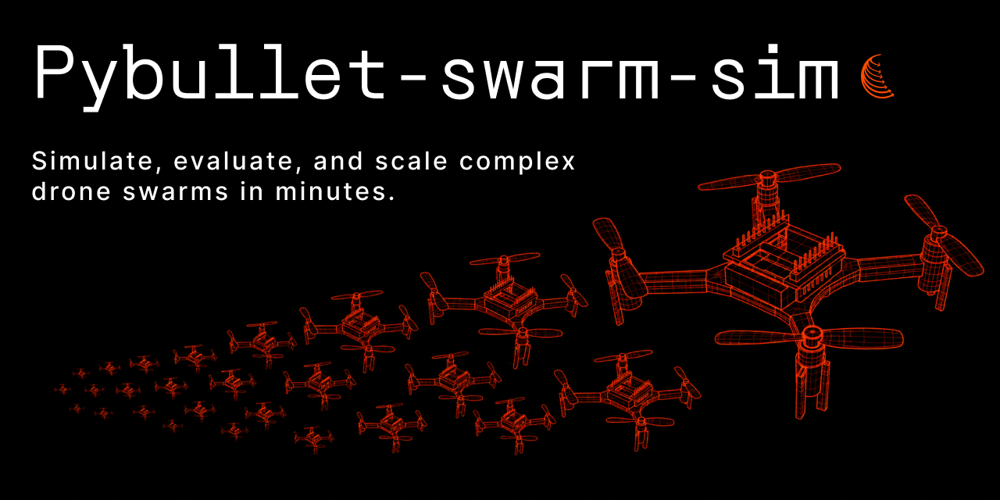

Welcome
PyBullet Swarm Sim is an open-source Python framework for physics-accurate multi-drone simulation — featuring 10 built-in swarm algorithms, RL-ready environments, Battle Mode, and a live web dashboard for visualization and benchmarking.
Quick Links
- Getting Started: install, run your first swarm, and launch the web dashboard.
- Architecture: explore the project layout and core modules (envs, agents, algorithms, battle mode).
Quick Start
This brief guide helps you get the simulation running instantly.
- Install from source:
git clone https://github.com/SimarcLabs/pybullet-swarm-sim.git cd pybullet-swarm-sim pip install -e . - Run a headless demo (e.g., Boids Flocking):
python -m swarm_sim.examples.flocking --n-drones 12 - Launch the Web Dashboard:
The dashboard will open automatically at http://127.0.0.1:8000, allowing you to run, compare, and benchmark algorithms visually.python -m swarm_sim.dashboard
See Getting Started for detailed setup and optional dependencies (RL, Dashboard). For code layout and features like MARL or Battle Mode, visit Architecture. To contribute, open an issue or pull request on the GitHub repository.